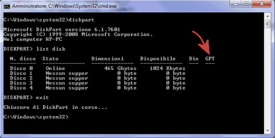

<!DOCTYPE html>
<html xmlns="http://www.w3.org/1999/xhtml" lang="" xml:lang="">
    <head>
        <meta charset="utf-8" />
        <meta name="generator" content="markdown-it" />
        <meta name="viewport" content="width=device-width, initial-scale=1.0, user-scalable=yes" />
        <meta name="author" content="runner" />
        <meta name="dcterms.date" content="2025-04-08 13:44:53.443" />
        <title>uefi_gpt</title>
        <style type="text/css">
            code {
                white-space: pre-wrap;
            }
            span.smallcaps {
                font-variant: small-caps;
            }
            span.underline {
                text-decoration: underline;
            }
            div.column {
                display: inline-block;
                vertical-align: top;
                width: 50%;
            }
        </style>
        <style type="text/css">
            a.sourceLine {
                display: inline-block;
                line-height: 1.25;
            }
            a.sourceLine {
                pointer-events: none;
                color: inherit;
                text-decoration: inherit;
            }
            a.sourceLine:empty {
                height: 1.2em;
            }
            .sourceCode {
                overflow: visible;
            }
            code.sourceCode {
                white-space: pre;
                position: relative;
            }
            div.sourceCode {
                margin: 1em 0;
            }
            pre.sourceCode {
                margin: 0;
            }
            @media screen {
                div.sourceCode {
                    overflow: auto;
                }
            }
            @media print {
                code.sourceCode {
                    white-space: pre-wrap;
                }
                a.sourceLine {
                    text-indent: -1em;
                    padding-left: 1em;
                }
            }
            pre.numberSource a.sourceLine {
                position: relative;
                left: -4em;
            }
            pre.numberSource a.sourceLine::before {
                content: attr(title);
                position: relative;
                left: -1em;
                text-align: right;
                vertical-align: baseline;
                border: none;
                pointer-events: all;
                display: inline-block;
                -webkit-touch-callout: none;
                -webkit-user-select: none;
                -khtml-user-select: none;
                -moz-user-select: none;
                -ms-user-select: none;
                user-select: none;
                padding: 0 4px;
                width: 4em;
                background-color: #ffffff;
                color: #a0a0a0;
            }
            pre.numberSource {
                margin-left: 3em;
                border-left: 1px solid #a0a0a0;
                padding-left: 4px;
            }
            div.sourceCode {
                color: #1f1c1b;
                background-color: #ffffff;
            }
            @media screen {
                a.sourceLine::before {
                    text-decoration: underline;
                }
            }
            code span {
                color: #1f1c1b;
            } /* Normal */
            code span.al {
                color: #bf0303;
                background-color: #f7e6e6;
                font-weight: bold;
            } /* Alert */
            code span.an {
                color: #ca60ca;
            } /* Annotation */
            code span.at {
                color: #0057ae;
            } /* Attribute */
            code span.bn {
                color: #b08000;
            } /* BaseN */
            code span.bu {
                color: #644a9b;
                font-weight: bold;
            } /* BuiltIn */
            code span.cf {
                color: #1f1c1b;
                font-weight: bold;
            } /* ControlFlow */
            code span.ch {
                color: #924c9d;
            } /* Char */
            code span.cn {
                color: #aa5500;
            } /* Constant */
            code span.co {
                color: #898887;
            } /* Comment */
            code span.cv {
                color: #0095ff;
            } /* CommentVar */
            code span.do {
                color: #607880;
            } /* Documentation */
            code span.dt {
                color: #0057ae;
            } /* DataType */
            code span.dv {
                color: #b08000;
            } /* DecVal */
            code span.er {
                color: #bf0303;
                text-decoration: underline;
            } /* Error */
            code span.ex {
                color: #0095ff;
                font-weight: bold;
            } /* Extension */
            code span.fl {
                color: #b08000;
            } /* Float */
            code span.fu {
                color: #644a9b;
            } /* Function */
            code span.im {
                color: #ff5500;
            } /* Import */
            code span.in {
                color: #b08000;
            } /* Information */
            code span.kw {
                color: #1f1c1b;
                font-weight: bold;
            } /* Keyword */
            code span.op {
                color: #1f1c1b;
            } /* Operator */
            code span.ot {
                color: #006e28;
            } /* Other */
            code span.pp {
                color: #006e28;
            } /* Preprocessor */
            code span.re {
                color: #0057ae;
                background-color: #e0e9f8;
            } /* RegionMarker */
            code span.sc {
                color: #3daee9;
            } /* SpecialChar */
            code span.ss {
                color: #ff5500;
            } /* SpecialString */
            code span.st {
                color: #bf0303;
            } /* String */
            code span.va {
                color: #0057ae;
            } /* Variable */
            code span.vs {
                color: #bf0303;
            } /* VerbatimString */
            code span.wa {
                color: #bf0303;
            } /* Warning */
        </style>
        <!--
  Firefox non carica font da locale quindi il font può non essere visibile
  quando di carica la pagina da locale.
  Bisogna impostare about:config
    security.fileuri.strict_origin_policy = false
  -->
        <link rel="stylesheet" href="../../inc/css/katex.min.css" />
        <link rel="stylesheet" href="../../inc/css/fonts/google_fonts.css" />
        <!-- <link href="https://cdn.jsdelivr.net/npm/bootstrap@5.3.0-alpha1/dist/css/bootstrap.min.css" rel="stylesheet" integrity="sha384-GLhlTQ8iRABdZLl6O3oVMWSktQOp6b7In1Zl3/Jr59b6EGGoI1aFkw7cmDA6j6gD" crossorigin="anonymous"> -->
        <link rel="stylesheet" href="../../inc/css/bootstrap.min.css" />
        <link rel="stylesheet" href="../../inc/css/cdp.css" />
        <!--[if lt IE 9]>
            <script src="//cdnjs.cloudflare.com/ajax/libs/html5shiv/3.7.3/html5shiv-printshiv.min.js"></script>
        <![endif]-->
        <meta name="keywords" content="Appunti,Note" />
        <meta name="description" content="Appunti di runner" />
        <link rel="icon" type="image/x-icon" href="../../inc/img/favicon.ico" />
        <link rel="shortcut icon" type="image/x-icon" href="../../inc/img/favicon.ico" />

        <link rel="stylesheet" href="../../inc/js/hljs/styles/default.css" />
        <script src="../../inc/js/hljs/lib/highlight.js"></script>
        <script src="../../inc/js/bootstrap/bootstrap.bundle.min.js"></script>
        <!-- <script src="https://cdn.jsdelivr.net/npm/bootstrap@5.3.0-alpha1/dist/js/bootstrap.bundle.min.js" integrity="sha384-w76AqPfDkMBDXo30jS1Sgez6pr3x5MlQ1ZAGC+nuZB+EYdgRZgiwxhTBTkF7CXvN" crossorigin="anonymous"></script> -->
        <script>
            hljs.initHighlightingOnLoad();
        </script>
        <script type="module">
            import mermaid from '../../inc/js/mermaid/dist/mermaid.esm.min.mjs';
            // import mermaid from 'https://cdn.jsdelivr.net/npm/mermaid@10/dist/mermaid.esm.min.mjs';
            mermaid.initialize({ startOnLoad: true });
        </script>
    </head>
    <body></body>
</html>
<h1 id="uefi_gpt" tabindex="-1">uefi_gpt <a class="header-anchor" href="#uefi_gpt" aria-hidden="true">🔗</a></h1>
<p class="code">2025-04-08 13:44:53.443</p>
<nav class="table-of-contents"><ol><li><a href="#partizioni-gpt">Partizioni GPT </a><ol><li><a href="#quali-sistemi-operativi-supportano-gpt%3F">Quali sistemi operativi supportano GPT? </a></li><li><a href="#mbr-o-gpt%3F-come-verificare-se-il-disco-utilizza-l'uno-o-l'altro-schema">MBR o GPT? Come verificare se il disco utilizza l&#39;uno o l&#39;altro schema </a></li><li><a href="#procedura-per-eliminare-il-gpt%3A">Procedura per eliminare il GPT: </a></li></ol></li><li><a href="#unique-ids">Unique IDs </a></li></ol></nav><h1 id="uefi" tabindex="-1">UEFI <a class="header-anchor" href="#uefi" aria-hidden="true">🔗</a></h1>
<p><a href="http://www.uefi.org/">http://www.uefi.org/</a></p>
<p>The UEFI specification defines an industry-leading interface between the operating system (OS) and the platform firmware, improving the performance, flexibility and security of computing devices.</p>
<h2 id="partizioni-gpt" tabindex="-1">Partizioni GPT <a class="header-anchor" href="#partizioni-gpt" aria-hidden="true">🔗</a></h2>
<p><strong>GPT (GUID Partition Table)</strong> è un standard per la definizione della tabella delle partizioni di un disco fisso che rappresenta l'evoluzione del ben noto <strong>MBR (Master Boot Record)</strong>.
GPT offre un meccanismo più flessibile per il partizionamento dei dischi rispetto al tradizionale MBR, porta con sé diversi vantaggi ed è parte dello standard EFI (Extensible Firmware Interface) il cui scopo è quello di sostituire il &quot;vecchio&quot; BIOS.</p>
<p>Sui sistemi più recenti dotati di UEFI (Unified Extensible Firmware Interface), &quot;interfaccia&quot; posta tra il firmware ed il sistema operativo e sostituto del tradizionale BIOS, è cosa sempre più frequenti trovare hard disk che fanno uso di partizioni GPT. Ma quali sono le differenze tra MBR e GPT?</p>
<p>Innanzi tutto, sia MBR che GPT consentono al sistema operativo od ai sistemi operativi installati di ottenere informazioni precise sulla struttura del disco. Sebbene MBR e GPT differiscano per la loro architettura intrinseca, sono due elementi che rivestono lo stesso indispensabile e fondamentale ruolo.</p>
<p>Il MBR, settore di avvio presente sul disco fisso che contiene informazioni di importanza cruciale per il corretto caricamento del sistema operativo, occupa i primi 512 byte dell'hard disk e conserva la tabella delle partizioni, utilizzata dal sistema – tra l'altro – per stabilire quale partizione è impostata come &quot;attiva&quot;. Allorquando, per i motivi più disparati, le informazioni presenti nel MBR dovessero danneggiarsi o venissero modificate in modo inadeguato, il rischio è quello di non poter più avviare normalmente il sistema o i sistemi installati sul disco fisso.
Ancor'oggi utilizzatissimo, il MBR è nato all'inizio degli anni '80, quella che nel campo informatico è praticamente preistoria. Nonostante la sua longevità, MBR porta con sé alcune limitazioni e qualche svantaggio.
<strong>Innanzi tutto, un disco basato su MBR non può ospitare più di quattro partizioni primarie.</strong>
Per creare un numero superiore di partizioni, si può impostare la quarta come partizione estesa quindi inserire al suo interno più sottopartizioni logiche.
<strong>Ogni partizione, inoltre, non può superare la dimensione massima di 2 Terabyte.</strong>
Il settore contenente il MBR è l'unica locazione di memoria ove vengono conservate tutte le informazioni sulla struttura del disco fisso: se il suo contenuto dovesse danneggiarsi, risulterebbe impossibile avviare i sistemi operativi installati.</p>
<p>GPT è parte integrante dello standard <strong>UEFI</strong>(anche se è usato anche in qualche BIOS per superare il limite dei 2 Terabyte a partizione) ed utilizza degli &quot;identificativi globali&quot; (GUID) per riferirsi al contenuto di ciascuna partizione presente all'interno del disco.
<strong>Utilizzando GPT è possibile creare un numero di partizioni teoricamente illimitato</strong> anche se la maggior parte dei sistemi operativi ne riduce il numero a 128.
Non è però soltanto questa la differenza tra GPT e MBR: mentre MBR limita la dimensione di ciascuna partizione a 2 Terabyte, <strong>GPT consente di arrivare addirittura sino a 9,44 Zettabyte</strong> ossia ad oltre 9 miliardi di Terabyte.
Microsoft Windows, comunque, riduce la dimensione massima delle partizioni GPT a 256 Terabyte.</p>
<p>Da un punto di vista strutturale, GPT conserva le informazioni sull'organizzazione del disco non solo all'inizio dell'hard disk ma anche alla fine dell'unità. Si tratta di una caratteristica importante (ridondanza) che permette di ripristinare il corretto caricamento dei sistemi operativi nel caso in cui i dati stivati nel blocco d'intestazione iniziale dovessero rovinarsi per un qualunque motivo.
Una serie di controlli sull'integrità del contenuto dell'header GPT di testa (CRC32 checksum) consentono un'immediata rilevazione di eventuali errori nell'intestazione e/o nella tabella delle partizioni.</p>
<p>Com'è possibile evincere in questo diagramma, GPT utilizza anche – come primo settore dell'hard disk – un MBR &quot;di protezione&quot;. Esso ha un ruolo importante ossia quello di permettere ad un BIOS di tipo tradizionale di avviare uno dei sistemi operativi installati sull'hard disk utilizzando lo speciale boot loader contenuto proprio nel settore iniziale dell'unità. Il MBR a capo del disco consente anche di proteggere il suo contenuto dall'azione di utilità datate, non in grado di riconoscere e supportare dischi GPT.</p>
<h3 id="quali-sistemi-operativi-supportano-gpt%3F" tabindex="-1">Quali sistemi operativi supportano GPT? <a class="header-anchor" href="#quali-sistemi-operativi-supportano-gpt%3F" aria-hidden="true">🔗</a></h3>
<p>Nel caso di Windows, solamente le versioni a 64 bit del sistema operativo possono essere avviate da partizioni GPT. Acquistando un personal computer od un notebook con Windows 8 o Windows 8.1 a 64 bit è quindi altamente probabile che venga fatto uso di partizioni GPT.
Su Windows 7, invece, la configurazione di default impone sempre l'uso del MBR in luogo di GPT.</p>
<p>Sui sistemi Mac di Apple basati sulla piattaforma Intel, GPT viene utilizzato in modo predefinito e non sarà possibile installare Mac OS X (a meno dell'impiego di particolari espedienti) su un hard disk MBR. Mac OS X, comunque, funziona su unità MBR: è solo l'installazione del sistema che di default non viene permessa.</p>
<p>Con le più recenti versioni delle varie distribuzioni Linux, invece, non esiste alcun problema: il pinguino si installerà e funzionerà sia su partizioni MBR che GPT.</p>
<h3 id="mbr-o-gpt%3F-come-verificare-se-il-disco-utilizza-l'uno-o-l'altro-schema" tabindex="-1">MBR o GPT? Come verificare se il disco utilizza l'uno o l'altro schema <a class="header-anchor" href="#mbr-o-gpt%3F-come-verificare-se-il-disco-utilizza-l'uno-o-l'altro-schema" aria-hidden="true">🔗</a></h3>
<p>Per verificare, in Windows, se si sta usando MBR o GPT è possibile aprire il prompt dei comandi con i diritti di amministratore quindi avviare l'utilità <code>diskpart</code>.
Digitando il comando list disk si otterrà la lista completa delle unità disco collegate.</p>
<p></p>
<p>La colonna <code>GPT</code> contiene l'informazione che si sta cercando. Un <code>asterisco</code>, posto accanto alle varie unità, indica che si sta usando lo standard GPT. Viceversa, l'assenza dell'asterisco rivela che nel disco corrispondente si sta utilizzando MBR.</p>
<h3 id="procedura-per-eliminare-il-gpt%3A" tabindex="-1">Procedura per eliminare il GPT: <a class="header-anchor" href="#procedura-per-eliminare-il-gpt%3A" aria-hidden="true">🔗</a></h3>
<ul>
<li>apriamo il prompt dei comandi di MS-DOS</li>
<li>scriviamo <code>diskpart</code></li>
<li>visualizziamo l’elenco dischi del nostro pc con il comando <code>list disk</code></li>
<li>selezioniamo l’hard disk “incriminato” scrivendo <code>select disk xx</code> (<code>xx</code> deve essere sostituito dal numero del drive)</li>
<li>digitiamo <code>clean</code> e il nostro hard disk verrà ripulito a dovere</li>
<li>ritorniamo in Gestione Disco e re-inizializziamo il nostro Hard Disk procedendo successivamente alla sua formattazione</li>
</ul>
<h2 id="unique-ids" tabindex="-1">Unique IDs <a class="header-anchor" href="#unique-ids" aria-hidden="true">🔗</a></h2>
<p>The <code>GPT GUID</code>s (<strong>Globally unique identifiers</strong>) and our familiar Linux <code>UUID</code>s (<strong>Universally Unique Identifiers</strong>)
are not the same thing, though they serve the same useful purpose: giving block devices unique names. Linux UUIDs are a function of filesystems, and are created when the filesystem is created.
To see Linux UUIDs just fire up the <code>blkid</code> command:</p>
<pre><code class="language-bash">$ blkid
/dev/sda1: LABEL=<span class="hljs-string">&quot;storage&quot;</span> UUID=<span class="hljs-string">&quot;60e97193-e9b2-495f-8db1
-651f3a87d455&quot;</span> TYPE=<span class="hljs-string">&quot;ext4&quot;</span>
/dev/sda2: LABEL=<span class="hljs-string">&quot;oldhome&quot;</span> UUID=<span class="hljs-string">&quot;e6494a9b-5fb6-4c35-ad4c-
86e223040a70&quot;</span> TYPE=<span class="hljs-string">&quot;ext4&quot;</span>
</code></pre>
<p>This example also shows the filesystem labels, which are arbitrary names we can give our block devices. We can use the UUIDs in <code>/etc/fstab</code> like this:</p>
<pre><code># storage, /dev/sda1 data storage
UUID=60e97193-e9b2-495f-8db1-651f3a87d455 /home/carla/storage ext4 user,defaults 0 0
</code></pre>
<p>Or use the label, like this:</p>
<pre><code>LABEL=storage /home/carla/storage ext4 user,defaults 0
</code></pre>
<p>To get GUIDs we need the gdisk command:</p>
<pre><code class="language-bash">$ gdisk /dev/sdc
GPT fdisk (gdisk) version 0.8.1
Partition table scan:
MBR: protective
BSD: not present
APM: not present
GPT: present
Found valid GPT with protective MBR; using GPT.
Command (? <span class="hljs-keyword">for</span> <span class="hljs-built_in">help</span>):
</code></pre>
<p>This offers immediately useful information: That this disk uses GPT, with an MBR in protective mode. This protected MBR allows booting from a legacy BIOS, and protects GPT from GPT-unaware utilities (such as fdisk) and operating systems. These will see an MBR disk with no free space. gdisk serves up a wealth of information on partitions.
Press the <span class="k">p</span> key to see all partitions:</p>
<p class="m">Command (? for help): <span class="k">p</span></p>
<pre><code>Disk /dev/sdc: 3907029168 sectors, 1.8 TiB
Logical sector size: 512 bytes
Disk identifier (GUID): 058D39EE-5D06-409F-AA0C-298A3E6CC302
Partition table holds up to 128 entries
First usable sector is 34, last usable sector is 3907029134
Partitions will be aligned on 2048-sector boundaries
Total free space is 819142765 sectors (390.6 GiB)
Number Start (sector) End (sector) Size Code Name
1 2048 1953791 953.0 MiB 0700
2 1953792 80078847 37.3 GiB 0700
3 80078848 2033203199 931.3 GiB 0700
4 2033203200 3009765375 465.7 GiB 0700
5 3009765376 3048826879 18.6 GiB 0700
6 3048826880 3087888383 18.6 GiB 8200
</code></pre>
<p>Note that the logical sector size is 512 bytes. All new large hard disks use 4096-byte sectors, so what's up? Let's fire up the lsblk command and see:</p>
<pre><code class="language-bash">$ lsblk -t /dev/sdc
NAME ALIGNMENT MIN-IO OPT-IO PHY-SEC LOG-SEC ROTA SCHED RQ-SIZE
sdc 0 4096 0 4096 512 1 cfq 128
|--sdc1 0 4096 0 4096 512 1 cfq 128
|--sdc2 0 4096 0 4096 512 1 cfq 128
|--sdc3 0 4096 0 4096 512 1 cfq 128
</code></pre>
<p>This shows that the physical sectors are 4096 bytes. 4096 bytes is a magic number on large hard drives for multiple reasons: it's a more efficient use of storage space, a normal page of memory on x86 computers is 4096 bytes, and the ext3/4 file systems default to 4KB clusters. But to preserve backwards compatibility (disk controllers, older software and operating systems) hard disk manufacturers have to emulate 512B sectors.</p>
<p>Let's go back to <code>gdisk</code> and examine a single partition. Press i, then the number of the partition:</p>
<p class="m">Command (? for help):<span class="k">i</span></p>
<p class="m">Partition number (1-6): <span class="k">3</span></p>
<p class="m">Partition GUID code: EBD0A0A2-B9E5-4433-87C0-68B6B72699C7 (Microsoft basic data)<br>
<mark>Partition unique GUID</mark>: 8C208C30-4E8F-4096-ACF9-858959BABBAA<br>
First sector: 80078848 (at 38.2 GiB)<br>
Last sector: 2033203199 (at 969.5 GiB)<br>
Partition size: 1953124352 sectors (931.3 GiB)<br>
Attribute flags: 0000000000000000<br>
Partition name: ''</p>
<p>Note the Partition GUID code, and how it says &quot;Microsoft basic data.&quot; Yeah, ole Microsoft always party-crashing, because this an EXT4 partition, so there is no way for Windows to read it, but will see it as an unformatted partition. You won't see this with current releases of gdisk, because until 2011 there were no Linux filesystem GUIDs. Now there are, so if you're not using an old Linux like mine (Mint 13) you'll see a proper Linux GUID instead (0FC63DAF-8483-4772-8E79-3D69D8477DE4).</p>
<p>The Partition unique GUID is what you'll use in <code>fstab</code>, like this:</p>
<p class="bl m"><mark>PARTUUID</mark>=8C208C30-4E8F-4096-ACF9-858959BABBAA /data ext4 user,defaults 0 0</p>
</body></html>